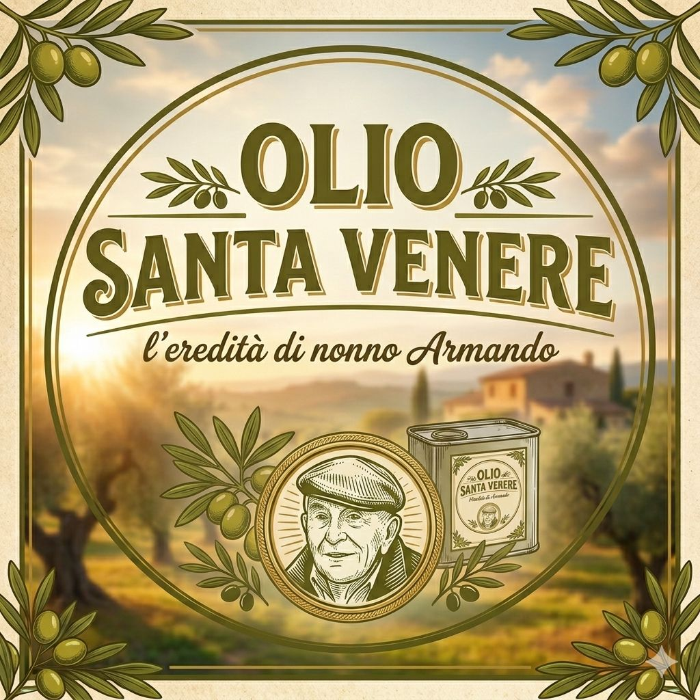
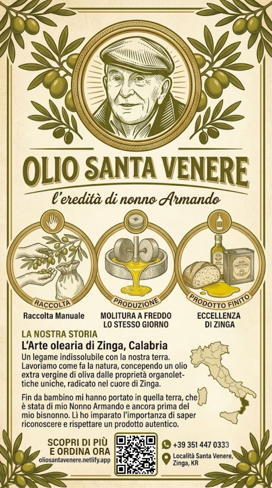
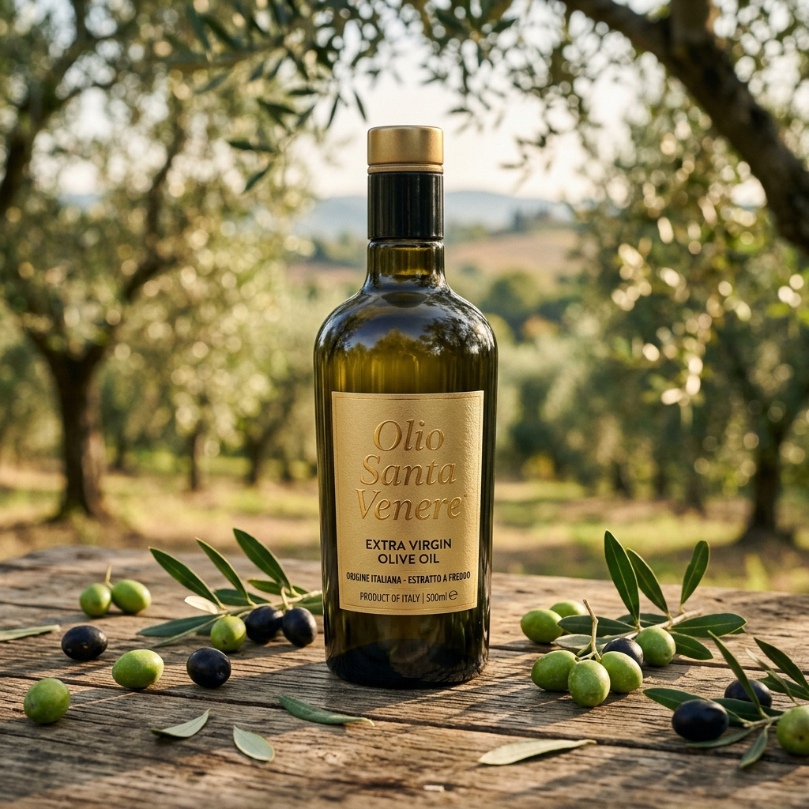

Olio Santa Venere
Eccellenza di Zinga, nel cuore della Calabria.

Contattaci per riservare la tua bottiglia. Produzione limitata.
Come Lavoriamo: Dalla Terra al Frantoio
Seguiamo ogni fase con passione e dedizione, combinando tradizione artigianale e cura.
La Raccolta Manuale
La Molitura a Freddo
L'Arte olearia di Zinga, Calabria

Un legame indissolubile con la nostra terra.
Lavoriamo come fa la natura, concependo un olio extra vergine di oliva dalle proprietà organolettiche uniche, radicato nel cuore di Zinga.
Fin da bambino mi hanno portato in quella terra, che è stata di mio Nonno Armando e ancora prima del mio bisnonno. Lì ho imparato l'importanza di saper riconoscere e rispettare un prodotto autentico.
"Questo è olio vero" è ciò che diceva mia madre quando preparava il pane con l'olio appena spremuto dal frantoio e l'origano. Mi sembrava una stupidaggine, come se ci potesse essere un olio finto, oggi capisco che aveva ragione.
— La Famiglia
Le olive vengono raccolte rispettando il terreno e portate nel frantoio del paese il giorno stesso, dove la molitura viene fatta a freddo con le macine in pietra.

Porta in tavola l'Olio Santa Venere
Produzione limitata e artigianale. Scegli il formato che preferisci e chiedi a Lorenzo come riceverlo.
Bottiglia Premium
- Vetro scuro anti-UV protettivo
- Olio Extra Vergine di Oliva
- Ideale per portare in tavola
Bottiglia o Latta
- Disponibile in vetro o latta
- Olio Extra Vergine di Oliva
- Formato degustazione ed assaggio
Latta Olio
- Latta protettiva in alluminio
- Olio Extra Vergine di Oliva
- Perfetto per l'uso quotidiano
Latta Olio
- Latta protettiva in alluminio
- Olio Extra Vergine di Oliva
- Scorta convenienza famiglia

Confezione e Spedizione incluse!
Porta l'Anima di Santa Venere sulla tua Tavola
Scegliere Olio Santa Venere è un omaggio alla tradizione calabrese di Nonno Armando.
Scrivi direttamente a Lorenzo su WhatsApp per scoprire come ricevere il tuo olio a casa.